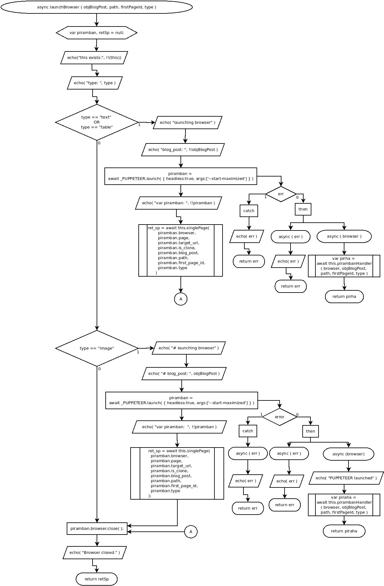

async launchBrowser ( objBlogPost, path, firstPageId, type )
Flowchart

Code
async launchBrowser ( objBlogPost, path, firstPageId, type ){
var piramban, retSp = null;
echo("this exists:", !!(this));
echo( "type: ", type );
if( type == "text" || type == "table" ){
//text or table handler
echo( "launching browser" );
echo( "blog_post: ", !!objBlogPost );
piramban = await _PUPPETEER.launch( { headless:false, args:['--start-maximized'] } )
.then(
async ( browser ) => {
let pirha = await this.pirambanHandler( browser, objBlogPost, path, firstPageId, type );
return pirha;
},
async ( err ) => {
echo( err );
return err;
})
.catch(
async ( err )=>{
echo( err );
return err;
});
echo( "var piramban: ", !!piramban );
retSp = await this.singlePage(
piramban.browser,
piramban.page,
piramban.targetUrl,
piramban.isClone,
piramban.objBlogPost,
piramban.path,
piramban.firstPageId,
piramban.type
);
} else if( type=="image" ){
//image type handler
echo( "# launching browser" );
echo( "# blog_post: ", objBlogPost );
piramban = await _PUPPETEER.launch( { headless:false, args:['--start-maximized'] } )
.then(
async ( browser ) => {
echo( "PUPPETEER launched" );
var piraha = await this.pirambanHandler( browser, objBlogPost, path, firstPageId, type );
return piraha;
},
async ( err ) => {
echo( err );
} )
.catch( async ( err )=>{
echo( err );
return err;
} );
echo( "var piramban____: ", !!piramban );
retSp = await this.singlePage(
piramban.browser,
piramban.page,
piramban.targetUrl,
piramban.isClone,
piramban.blogPost,
piramban.path,
piramban.firstPageId,
piramban.type
);
}
//close browsing
piramban.browser.close();
echo( "Browser closed." );
return retSp;
}
Refers to:
-
async pirambanHandler( browser, objBlogPost, path, firstPageId, type )
-
async singlePage( browser, page, targetUrl, isClone, blogPost, path, firstPageId, type )